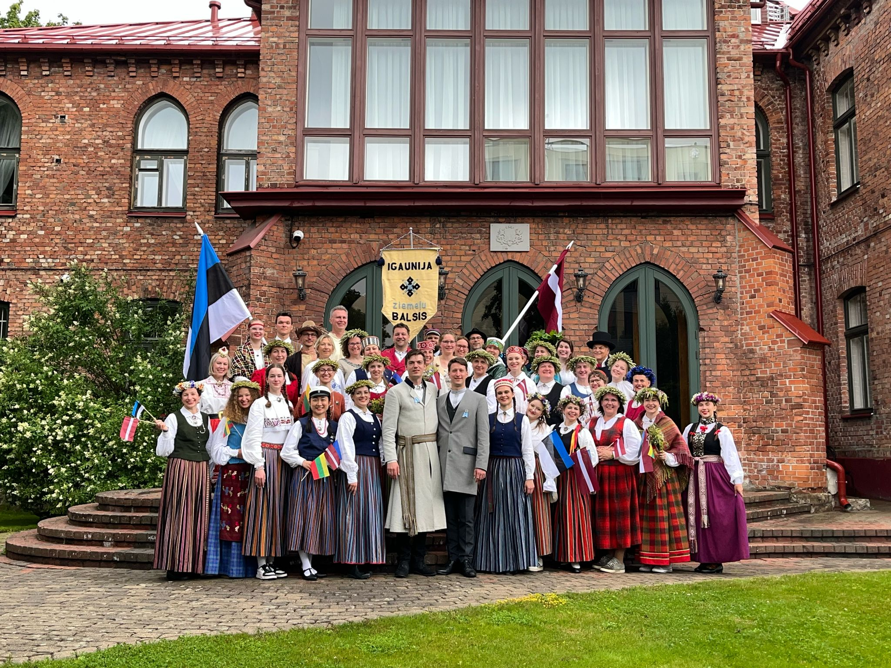
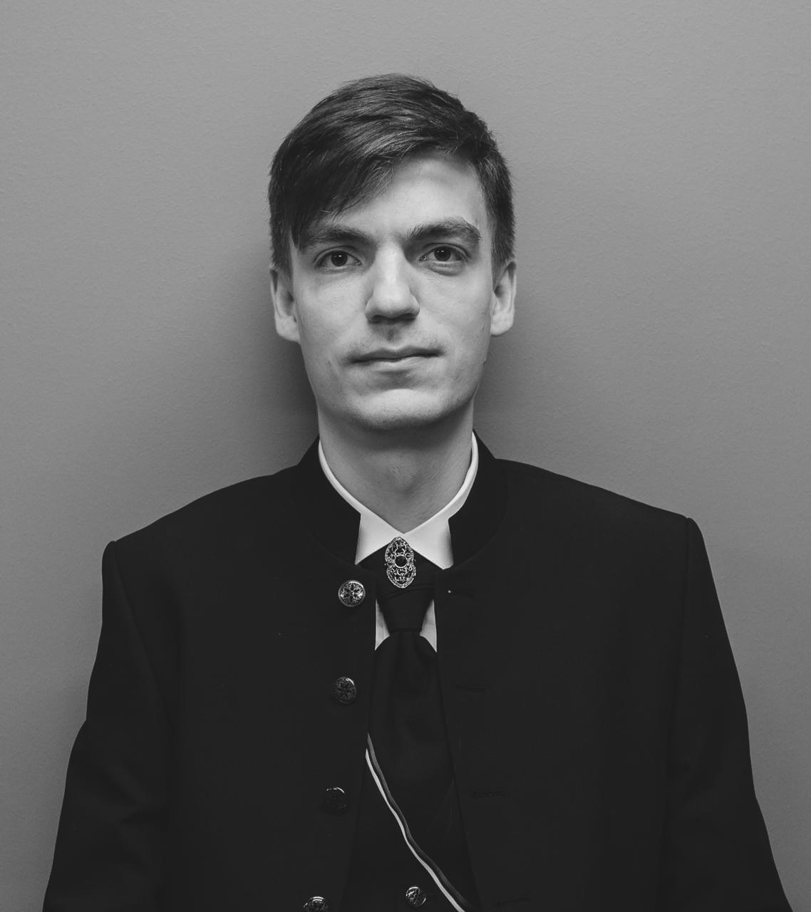
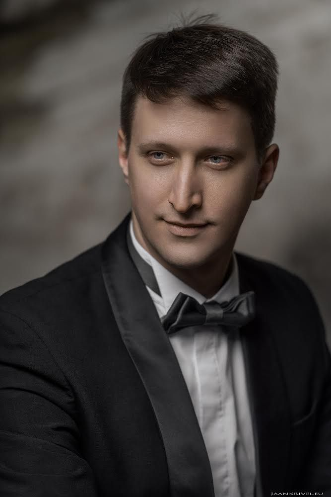
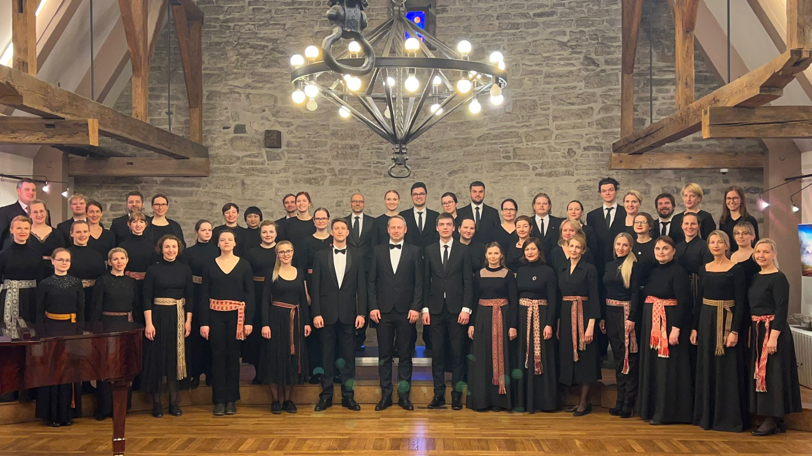
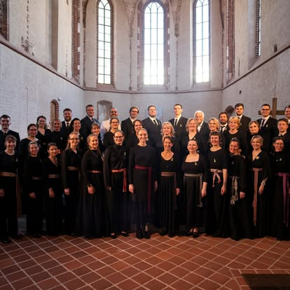

About us

The Latvian choir in Estonia "Ziemeļu Balsis" was founded in 2012. Today, the choir unites singers from ten different countries. Ziemeļu Balsis is special not only for its international membership but also for its ability to bring together people from two Estonian cities — Tartu and Tallinn. Thanks to regular joint rehearsals, the choir has grown into a truly harmonious and united collective.
We are proud to be the first choir to take part in all three Baltic Song Festivals: the Latvian Song Festival (2013, 2018, 2023), the Lithuanian Song Festival (2024), and the Estonian Song Festival (2025). This achievement reflects our dedication to carrying Baltic choral traditions across borders.
Our musical direction is led by two inspiring conductors — Matīss Briedis and Rihards Zariņš.
Matīss Briedis studied at the Heino Eller Music School, graduating in 2017, and at the Estonian Academy of Music and Theatre, where he is now pursuing his Master’s degree in conducting. A member of Ziemeļu Balsis since 2013, Matīss became one of the choir’s conductors in 2017. He has guided several choirs in Tartu and Tallinn to national song festivals across the Baltics.
Rihards Zariņš began his musical journey in 1998 at the Riga Cathedral Choir School and continued at the Jāzeps Vītols Academy of Music in Latvia. Over the years, he has conducted choirs in Latvia, Estonia, and Finland, including in Helsinki, and has been actively involved in organizing choir events since 2013. His education also includes studies at the Estonian Academy of Music and Theatre, strengthening his ties with the Baltic choral tradition.
Together, Matīss and Rihards shape the sound and spirit of Ziemeļu Balsis, guiding the choir to new heights while keeping alive the joy of singing that unites us all.

Matīss Briedis

Rihards Zariņš
Youtube video preview
Rehearsals
Tartu
When: Wednesdays, 18:00
Address: Juhan Liivi 2d (Tartu International School)
🌍 Open in Google MapsMedia
Gallery

